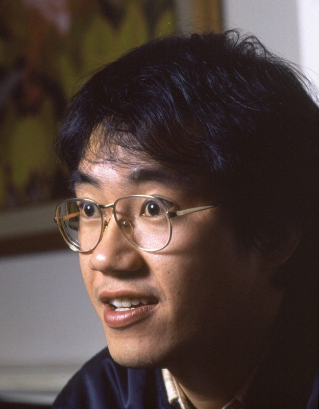

Two people that inspire me wolud be akira toriyama, and leonardo da vinci Akira was the one who created DBZ he inspired and moved a lot of people with is work leonardo is an artist a engineer and a mathematician leaving a huge mark in our world and ispire to leave a mark as head did.
♠
